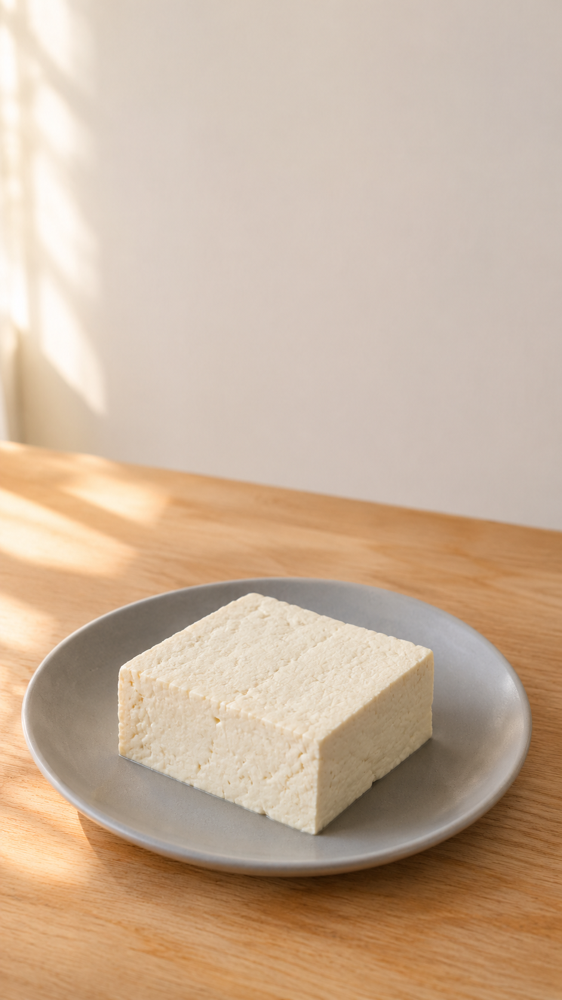

01영상 등록 완료
영자씨의부엌 스퀴즈 참기름
노즐로 짜서 더하는 참기름. 음식 표면에 붙어 퍼지는 윤기를 강조합니다.
A · 몰입형 CF
영상 등록 완료제품의 장점·특이점을 극대화하는 몰입형 연출
완성된 영상과 제작 자료입니다. 제품 표현과 완성도는 아래 검토를 확인해 주세요.
오더 · 실제 프롬프트 · 사용 사진 · 리뷰
제품 포인트
노즐로 짜서 더하는 참기름. 음식 표면에 붙어 퍼지는 윤기를 강조합니다.
훅
AUTHOR_P01_접촉선이커지는순간 — HK038의 '제품 성질이 공간 경험을 조직한다'는 관계만 참고하며 직조·건물·원작 표현은 사용하지 않는다.
음성
영자씨의부엌, 저온압착 국산 참기름. 짜서 더하는 고소한 마무리.
오더 원문
설정: 15초 몰입형 CF. Seedance 2.5 / omni_reference / 480p / draft:true / 9:16 / 오디오 포함 / count1 예정. 현재는 기획·앵커 요청 준비만 하며 제출하지 않는다. 제품·인물·장소·사용: 영자씨의부엌 저온압착 국산 스퀴즈 참기름 200ml. 따뜻한 자연광의 식탁에서 성인의 손이 사용 준비된 원제품을 두부 한 조각 위로 기울여 노즐로 짠다. 병과 라벨의 정체성을 읽히고 개봉 동작은 생략한다. 제품포인트·변화·훅: 가느다란 참기름이 닿은 지점에서 표면에 붙어 퍼지는 경계의 경험을 크게 확장한다. 가까운 접촉선이 시야를 가로지르고 먼 경계와 이어지며, 지나간 자리에 얇은 막과 윤기가 남는다. 노즐에서 시작된 같은 기름의 흐름과 두부와의 접촉을 유지한다. 거대한 두부 풍경이나 기름 회오리로 대신하지 않는다. 반응·마무리: 확대된 접촉선이 같은 두부 위의 작은 윤기로 이어지고, 방금 사용한 병과 음식을 함께 남긴다. 먹는 장면을 추가하지 않는다. 갈색 병·노란 목·가늘어지는 원래 노즐·라벨을 유지하고 플립캡·힌지·미확인 부품을 만들지 않는다. 톤·BGM·음성·후작업: 따뜻한 실사 질감과 강한 규모·깊이 변화. 음성은 '영자씨의부엌, 저온압착 국산 참기름. 짜서 더하는 고소한 마무리.' BGM은 음성을 가리지 않는다. 새 화면 글자는 후반 합성하고 기존 제품 디자인은 보존한다. 컷 수·초표를 공통 규칙으로 고정하지 않는다.
실제 프롬프트 원문
15초 세로 9:16 실사 몰입형 제품 CF. 제품은 영자씨의부엌 저온압착 국산 스퀴즈 참기름 200ml. 참조 이미지 1은 원제품 외형의 기준이며 갈색 병, 노란 라벨과 목, 가늘어지는 원래 노즐, 라벨의 검정·빨강 인쇄와 인물 그림을 사용부터 끝까지 유지한다. 참조 이미지 2는 제품 없는 장면 기준이다. 따뜻한 왼쪽 자연광이 들어오는 원목 식탁의 무광 회색 접시와 흰 두부 한 조각을 그대로 사용한다. 두 참조를 하나의 현실 장면으로 결합하고 분할 화면을 만들지 않는다. 성인의 손이 사용 준비된 원제품을 들고 라벨이 읽히는 상태에서 같은 두부 위로 기울여 가느다란 참기름을 노즐로 짠다. 개봉 동작은 생략하고 새 뚜껑·플립캡·힌지나 분리 부품을 발명하지 않는다. 노즐 끝에서 내려온 같은 기름이 두부 위 특정 지점에 실제로 닿는 순간을 명확히 보여준다. 그 접촉점에서 두부 표면에 붙어 넓어지는 얇은 기름막의 경계를 따라 시야가 깊이 들어간다. 가까운 접촉선은 압도적으로 크게 전경을 가로지르고 먼 경계도 이어서 뻗으며, 기름이 지나간 자리에는 얇고 투명한 윤기만 남는다. 아직 마른 흰 두부 면과 막이 붙은 면의 차이가 진행 방향을 읽히게 한다. 노즐에서 시작된 흐름, 바로 그 접촉점, 같은 두부 표면과 퍼지는 경계의 연결을 유지한다. 표면에 밀착된 큰 접촉선과 전후 깊이가 시각적 절정이다. 평범한 뿌리기 접사만 이어가지 않되 기름 양이나 점도 자체를 과장하지 않는다. 기름을 독립된 회오리·나선·터널·황금 고체나 파도로 만들지 않는다. 두부를 별도의 산맥이나 음식 풍경으로 바꾸지 않는다. 확대된 같은 접촉선이 현실 크기 두부 위의 작은 윤기로 이어지고, 손이 방금 사용한 병을 같은 접시 곁에 세워 원제품 라벨과 음식의 사용 결과를 함께 남긴다. 음식 전체가 접촉 없이 갑자기 빛나지 않게 한다. 얼굴·먹는 연기·혼합 조리·새 고명이나 소스는 추가하지 않는다. 음성: 자연스럽고 명료한 한국어 성인 내레이션으로 정확히 "영자씨의부엌, 저온압착 국산 참기름. 짜서 더하는 고소한 마무리." 따뜻하고 절제된 BGM은 낮게 두어 브랜드와 제품명이 선명하게 들리게 한다. 건강효능·맛 비교 우위·인증·소비자 증언을 추가하지 않는다. 새 자막이나 화면 그래픽은 생성하지 않고 기존 병 디자인을 보존한다. 고정 컷 수나 초표 없이 제품 사용에서 접촉선의 강한 규모·깊이 변화로, 다시 동일한 음식과 병으로 자연스럽게 완결한다.
수집 원본 · 2K 보완본 · 실제 앵커 사진



실제 설정 · 작업 정보
모델: Seedance 2.5 · omni_reference
job ID: 6bda09b8-7da4-4728-bcc4-3280c7966b9d
길이: 15
해상도: 480p
Draft: draft:true 적용 확인
견적 크레딧 (실제 사용량 아님): 45
기록된 사실
저온압착 국산 스퀴즈 참기름 200ml
국산 통참깨100%는 판매자 표기
원래 가늘어지는 노란 노즐로 짜는 사용
갈색병·노란 라벨과 목
수집·제작 과정 참고
판매몰 Horsenpig와 제품 브랜드 영자씨의부엌을 구분했습니다.
원본 사진 해시가 이전 승인 원본과 같아 검증된 로컬 AI 2K 보완본을 재사용했습니다. 두부 식탁은 이번에 GPT 제작 세션이 선택한 연출 배경입니다.
상품 설명은 판매자 표기이며, 제품 성능·효능을 독립 실험한 결과는 아닙니다.
AI 2K 보완은 원사진을 확대하며 작은 글자·질감을 추정할 수 있습니다. 라벨 정확도를 보증하는 작업은 아닙니다.
오더 원문은 기획 준비 때의 기록이라 제출하지 않는다는 문장이 남아 있습니다. 실제 실행 결과와 설정은 이 페이지의 작업 정보가 기준입니다.
제품당 유료 영상 1회, 추가 재생성 0회. 릴스는 아직 제작하지 않았습니다.
리뷰
노즐에서 두부에 기름을 더하고 병과 사용 결과를 함께 남기는 흐름은 보입니다. 다만 확대 구간이 노즐·접촉부 접사에 집중되고, 얇은 윤기보다 갈색 기름 덩어리·고임이 강합니다. 계획한 압도적인 접촉선의 공간 경험은 충분히 살아났다고 보기 어렵습니다. 라벨의 작은 문자와 노즐 주변 형태도 원사진 그대로 보존됐다고 확정할 수 없습니다.
약 15.04초 · 480×854 · 오디오 스트림 포함. 서비스가 반환한 실제 요청에서 draft:true·15초·480p·세로·오디오 켜기를 확인했습니다.
영자 씨의 부엌, 저어 납착, 국산 참기름 짜서 더하는 고사한 마무리 로컬 음성인식 결과입니다. 브랜드·단어가 잘못 인식될 수 있으며, 발음·BGM·음향 완성도의 청취 평가와는 다릅니다.
B · 크리에이터 릴스
새 Draft 미제작카메라에 말하는 인물 · 제품 소개와 짧은 반응
크리에이터 릴스 결과가 들어갑니다아직 제작하지 않았습니다
예정 설정 · 시댄스 2.5 / 15초 / 480p Draft / 소리 포함
오더 · 실제 프롬프트 · 사용 사진
문제 제기 → 제품 소개·보여주기 → 짧은 반응을 담는 크리에이터 릴스입니다. 실제 대사와 프롬프트는 아직 작성하지 않았습니다.
오더 · 실제 프롬프트 · 수집 원본 · 2K 보완본 · 실제 사용 사진
제작 후 실제 자료로 채웁니다.